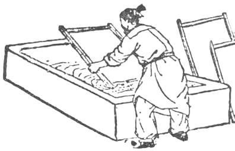

Sua História
ㅤㅤA história do papel remonta à China antiga, no século II d.C., o oficial Cai Lun aperfeiçoou a técnica de fabricação utilizando fibras vegetais, como bambu, cânhamo e algodão. Essa inovação permitiu a produção de um material leve e durável, que rapidamente se tornou popular para escrita e registro de informações.
ㅤㅤO uso do papel se espalhou para o Oriente Médio através das rotas comerciais, especialmente após a Batalha de Talas em 751, onde os chineses foram derrotados e suas técnicas de fabricação foram adotadas pelos árabes. Nos séculos seguintes, a produção de papel se expandiu pela Europa, especialmente após a chegada de imigrantes árabes que trouxeram suas técnicas e conhecimento.
ㅤㅤNo século XV, a invenção da prensa de Gutenberg revolucionou a produção de livros, aumentando a demanda por papel e contribuindo para a disseminação do conhecimento durante o Renascimento. A partir do século XIX, a Revolução Industrial trouxe novas tecnologias, permitindo a produção em massa de papel, com a introdução da celulose de madeira como matéria-prima principal, o que tornava o papel mais acessível.
ㅤㅤAtualmente, o papel é uma parte fundamental da vida cotidiana, utilizado em livros, jornais, embalagens e muito mais. Apesar do avanço das tecnologias digitais, que mudaram a forma como consumimos informações, o papel continua a ter um papel significativo na educação, arte e comunicação, refletindo sua importância histórica e cultural ao longo dos séculos.
Composição
ㅤㅤO papel é principalmente composto por celulose, uma fibra natural encontrada em plantas. A celulose é extraída de várias fontes, como madeira, bambu, cânhamo e algodão. O processo de fabricação do papel começa com a trituração dessas matérias-primas, que são misturadas com água para formar uma pasta.
ㅤㅤApós a formação da pasta, aditivos podem ser incluídos para melhorar as propriedades do papel. Isso pode incluir cargas, como carbonato de cálcio e argila, que aumentam a opacidade e a suavidade do papel. Produtos químicos são também utilizados para melhorar a resistência, a brancura e a durabilidade. Corantes podem ser adicionados para criar papéis de diferentes cores.
ㅤㅤDepois de misturar todos os componentes, a pasta é seca e prensada. Esse processo é crucial para determinar a textura e a espessura do papel, resultando em papéis que variam desde os mais finos e leves, como o papel de seda, até os mais grossos e resistentes, como o papelão.
ㅤㅤAlém disso, com a crescente preocupação ambiental, a produção de papel reciclado tem se tornado comum, utilizando fibras recuperadas para reduzir o impacto ambiental e promover a sustentabilidade.
Tipos de Papel
| Tipo | Aplicações |
|---|---|
| Cartões perfurados | Usados em computação, contêm furos que representam dados. |
| Papel branco | Ideal para impressão e escrita em escritórios. |
| Papel sulfite | Papel leve, comum em impressoras e copiadoras. |
| Papel fotográfico | Para impressão de fotos, com acabamentos que realçam cores. |
| Papel cartão | Mais espesso, usado em cartões e embalagens. |
| Papel reciclado | Feito de fibras recuperadas, é uma opção sustentável. |
| Papel de seda | Delicado, usado para embrulhar presentes e artesanato. |
| Papel kraft | Resistente, utilizado em embalagens e artesanato. |
| Papel vergé | Textura com linhas finas, ideal para documentos formais. |
| Papel de embrulho | Decorativo, usado para embrulhar presentes. |
| Papel offset | Para impressão em larga escala, como revistas e folhetos. |
| Papel bond | Alta resistência, usado em impressões e cadernos. |
| Papel milimetrado | Grade de milímetros, ideal para desenhos técnicos. |
Como Funciona a Reciclagem do Papel
ㅤㅤA reciclagem de papel é um processo fundamental para a conservação dos recursos naturais e a redução do impacto ambiental. O primeiro passo é a coleta de papel usado, que pode incluir jornais, revistas, cadernos e caixas de papelão. É importante evitar a inclusão de papéis contaminados, como aqueles com gordura, alimentos ou produtos químicos, pois podem comprometer a qualidade do papel reciclado.
ㅤㅤApós a coleta, o papel deve ser levado a pontos de coleta ou centros de reciclagem. Esses locais são equipados para lidar com grandes volumes de papel e garantem que ele seja processado corretamente. No centro de reciclagem, o papel é separado por tipo e cor, um passo essencial para garantir a eficiência da reciclagem.
ㅤㅤO próximo estágio envolve a trituração do papel, que é misturado com água para formar uma pasta chamada polpa. Durante esse processo, as impurezas, como grampos e fitas adesivas, são removidas. A polpa é então filtrada para eliminar contaminantes, resultando em fibras soltas e limpas.
ㅤㅤEssas fibras são secas e transformadas em novas folhas de papel. O papel reciclado pode ser utilizado para criar uma variedade de produtos, desde papel sulfite até caixas de papelão, completando assim o ciclo de reciclagem. Este processo não só reduz a quantidade de resíduos sólidos em aterros, mas também economiza água e energia, contribuindo para um futuro mais sustentável.